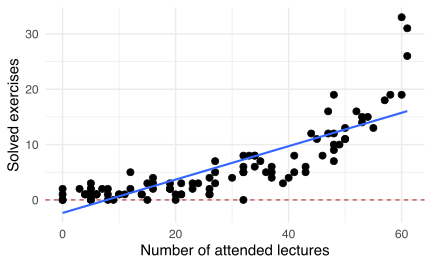

| id | studyh | passed |
|---|---|---|
| 1 | 59 | 1 |
| 2 | 41 | 0 |
| 3 | 51 | 0 |
| 4 | 26 | 0 |
| ... | ... | ... |
| 47 | 57 | 0 |
| 48 | 89 | 1 |
| 49 | 50 | 0 |
| 50 | 41 | 0 |
Main references
For a detailed introduction about GLMs
- Chapters: 1 (intro), 4 (GLM fitting), 5 (GLM for binary data)
Introduction
Filippo Gambarota
University of Padova
2023
Last Update: 2023-12-03
The Probability Density Function (PDF) is:
\[ f(x, \mu, \sigma) = \frac{1}{\sigma\sqrt{2\pi}} e^{-\frac{1}{2}(\frac{x - \mu}{\sigma})^2} \]
In Psychology, variables do not always satisfy the properties of the Gaussian distribution. For example:
Non-negative and probably skewed data:
A series of binary (i.e., bernoulli) trials with two possible outcomes:
Number of symptoms for a group of patients during the last month:
Example: probability of passing the exam as a function of hours of study:
| id | studyh | passed |
|---|---|---|
| 1 | 59 | 1 |
| 2 | 41 | 0 |
| 3 | 51 | 0 |
| 4 | 26 | 0 |
| ... | ... | ... |
| 47 | 57 | 0 |
| 48 | 89 | 1 |
| 49 | 50 | 0 |
| 50 | 41 | 0 |
dat |>
summarise(n = n(),
npass = sum(passed),
nfail = n - npass,
ppass = npass / n)#> n npass nfail ppass
#> 1 50 19 31 0.38Let’s plot the data:
Let’s fit a linear model passing ~ study_hours using lm:
Do you see something strange?
A little spoiler, the relationship should be probably like this:
Another example, the number of solved exercises in a semester as a function of the number of attended lectures (\(N = 100\)):
| id | nattended | nsolved |
|---|---|---|
| 1 | 5 | 0 |
| 2 | 20 | 0 |
| 3 | 53 | 15 |
| 4 | 19 | 3 |
| ... | ... | ... |
| 97 | 43 | 5 |
| 98 | 60 | 33 |
| 99 | 33 | 8 |
| 100 | 49 | 10 |
Again, fitting the linear model seems partially appropriate but there are some problems:
Again, fitting the linear model seems partially appropriate but there are some problems:
Also the residuals are quite problematic:
Another little spoiler, the model should consider both the support of the y variable and the non-linear pattern. Probably something like this:
Both linear models somehow capture the expected relationship but there are serious fitting problems:
As a general rule in life statistics:
All models are wrong, some are useful
For a detailed introduction about GLMs
For a basic and well written introduction about GLM, especially the Binomial GLM
Great resource for interpreting Binomial GLM parameters:
Detailed GLMs book. Very useful especially for the diagnostic part:
The holy book :)
Another good reference…
The random component of a GLM identify the response variable \(y\) coming from a certain probability distribution.
The systematic component or linear predictor (\(\eta\)) of a GLM is \(\beta_0 + \beta_1x_{1i} + ... + \beta_px_{pi}\).
\[\begin{align*} \eta = \beta_0 + \beta_1x_1 + ... + \beta_px_p \end{align*}\]
This part is invariant to the type of model and is the combination of explanatory variables to predict the expected value \(\mu\) (i.e. the mean) of the distribution.
The link function \(g(\mu)\) is an invertible function that connects the mean \(\mu\) of the random component with the linear combination of predictors \(g(\mu) = \beta_0 + \beta_1x_{1i} + ... + \beta_px_{pi}\). The inverse of the link function \(g^{-1}\) map the linear predictor (\(\eta\)) into the original scale.
\[ g(\mu) = \eta = \beta_0 + \beta_1x_{1i} + ... + \beta_px_{pi} \]
\[ \mu = g^{-1}(\eta) = g^{-1}(\beta_0 + \beta_1x_{1i} + ... + \beta_px_{pi}) \]
Thus, the relationship between \(\mu\) and \(\eta\) is linear only when the link function is applied i.e. \(g(\mu) = \eta\).
The simplest link function is the identity link where \(g(\mu) = \mu\) and correspond to the standard linear model. In fact, the linear regression is just a GLM with a Gaussian random component and the identity link function.
| Family | Link | Range |
|---|---|---|
| `gaussian` | identity | $$(-\infty,+\infty)$$ |
| `gamma` | log | $$(0,+\infty)$$ |
| `binomial` | logit | $$\frac{0, 1, ..., n_{i}}{n_{i}}$$ |
| `binomial` | probit | $$\frac{0, 1, ..., n_{i}}{n_{i}}$$ |
| `poisson` | log | $$0, 1, 2, ...$$ |
A single Bernoulli trial is defined as:
\[ f(x, p) = p^x (1 - p)^{1 - x} \]
Where \(p\) is the probability of success and \(k\) the two possible results \(0\) and \(1\). The mean is \(p\) and the variance is \(p(1 - p)\)
The probability of having \(k\) success (e.g., 0, 1, 2, etc.), out of \(n\) trials with a probability of success \(p\) (and failing \(q = 1 - p\)) is:
\[ f(n, k, p)= \binom{n}{k} p^k(1 - p)^{n - k} \]
The \(np\) is the mean of the binomial distribution is \(np\) is the variance \(npq = np(1-p)\). The binomial distribution is just the repetition of \(n\) independent Bernoulli trials.
A classical example for a Bernoulli trial is the coin flip. In R:
n <- 30
p <- 0.7
dat <- data.frame(k = 0:n)
dat$y <- dbinom(dat$k, n, p)
dat |>
ggplot(aes(x = k, y = y)) +
geom_point() +
geom_segment(aes(x = k, xend = k, y = 0, yend = y)) +
mytheme() +
ylab("dbinom(x, n, p)") +
ggtitle(latex2exp::TeX("$n = 30$, $p = 0.7$"))# generate k (success)
n <- 50 # number of trials
p <- 0.7 # probability of success
rbinom(1, n, p)
#> [1] 35
# let's do several experiments (e.g., participants)
rbinom(10, n, p)
#> [1] 32 31 32 34 30 36 37 39 34 36
# calculate the probability density given k successes
n <- 50
k <- 25
p <- 0.5
dbinom(k, n, p)
#> [1] 0.1122752
# calculate the probability of doing 0, 1, 2, up to k successes
n <- 50
k <- 25
p <- 0.5
pbinom(k, n, p)
#> [1] 0.5561376The Bernoulli distributions is used as random component when we have a binary dependent variable or the number of successes over the total number of trials:
The Bernoulli or the Binomial distributions can be used as random component when we have a binary dependent variable or the number of successes over the total number of trials.
When fitting a GLM with the binomial distribution we are including linear predictors on the expected value \(\mu\) i.e. the probability of success.
Most of the GLM models deal with a mean-variance relationship:
The number of events \(k\) during a fixed time interval (e.g., number of new users on a website in 1 week) is:
\[\begin{align*} f(k,\lambda) = Pr(X = k) = \frac{\lambda^k e^{-\lambda}}{k!} \end{align*}\]
Where \(k\) is the number of occurrences (\(k = 0, 1, 2, ...\)), \(e\) is Euler’s number (\(e = 2.71828...\)) and \(!\) is the factorial function. The mean and the variance of the Poisson distribution is \(\lambda\).
As \(\lambda\) increases, the distribution is well approximated by a Gaussian distribution, but the Poisson is discrete.
We can also use all the other functions such as the dpois(), qpois() and ppois()
The mean-variance relationship can be easily seen with a continuous predictor:
The Gamma distribution has several :parametrizations. One of the most common is the shape-scale parametrization:
\[ f(x;k,\theta )={\frac {x^{k-1}e^{-x/\theta }}{\theta ^{k}\Gamma (k)}} \] Where \(\theta\) is the scale parameter and \(k\) is the shape parameter.
The mean and variance are defined as:
Another important quantity is the coefficient of variation defined as \(\frac{\sigma}{\mu}\) or \(\frac{1}{\sqrt{k}}\) (or \(\frac{1}{\sqrt{\alpha}}\)).
Again, we can see the mean-variance relationship:
To convert between different parametrizations, you can use the gamma_params() function:
gamma_params <- function(shape = NULL, scale = 1/rate, rate = 1,
mean = NULL, sd = NULL,
eqs = FALSE){
if(eqs){
cat(rep("=", 25), "\n")
cat(eqs()$gamma, "\n")
cat(rep("=", 25), "\n")
}else{
if(is.null(shape)){
var <- sd^2
shape <- mean^2 / var
scale <- mean / shape
rate <- 1/scale
} else if(is.null(mean) & is.null(sd)){
if(is.null(rate)){
scale <- 1/rate
} else{
rate <- 1/scale
}
mean <- shape * scale
var <- shape * scale^2
sd <- sqrt(var)
}else{
stop("when shape and scale are provided, mean and sd need to be NULL (and viceversa)")
}
out <- list(shape = shape, scale = scale, rate = rate, mean = mean, var = var, sd = sd)
# coefficient of variation
out$cv <- 1/sqrt(shape)
return(out)
}
}Is not always easy to work with link functions. In R we can use the distribution(link = ) function to have several useful information. For example:
fam <- binomial(link = "logit")
fam$linkfun() # link function, from probability to eta
fam$linkinv() # inverse of the link function, from eta to probabilityWe are going to see the specific arguments, but this tricks works for any family and links, even if you do not remember the specific function or formula.